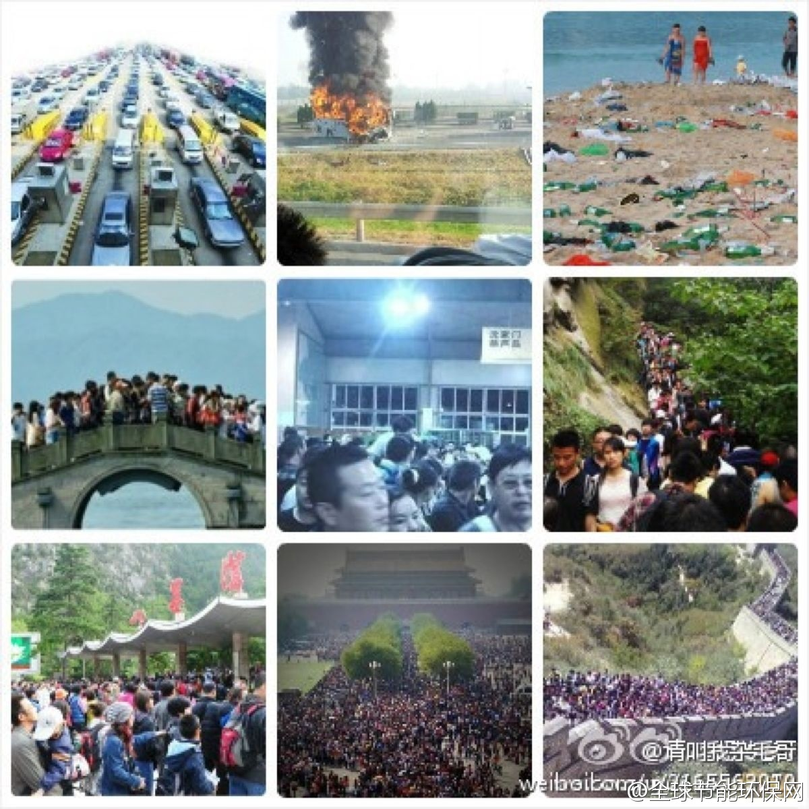

节后统计消费再创新高//@许小年: 1. 取消黄金周，错峰放假 。2. 车、船、机、门票、路费、酒店等旅游设施价格随行就市，禁止任何形式的行政管制。价格机制的首要和最重要作用是配置稀缺资源。用纳税人的钱修路是否应收费、政府垄断旅游资源、如何让利于民是不同的问题，应分开讨论。减税是更好的办法。@全球节能环保网:华山数万人滞留；普陀山2万多人滞留；丽江上万游客找不到住处；大梅沙海滩人多得看不到沙子；三亚海滩成垃圾场；鼓浪屿“沦陷”；西湖见人不见桥；黄山游客爆满；九寨沟深夜12点赴沟道路纹丝不动，故宫人山人海，长城不分内外。（图片来自：@胡传春V） 